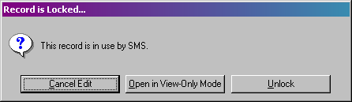
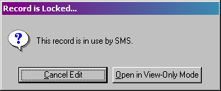

|
Basic Functions - Overview |
Top Previous Next |
|
need to verify that this information is valid for KTS Every KellPro Key System has a few basic functions that users need to be aware of. This chapter tells about a few of these functions. Login
Each user should have a unique username and password for the KellPro System. Each time a person enters the system, they will have to supply their username and password. The login will determine the security access rights, the area the user starts in, and many other user-specific settings. When inside the Key System, the first button at the top of the screen (the one that looks like a key) will be the Login button. When the user is done using the computer, they should click this button to log their user out. This will allow the next user to log in using their own username and password.
Insert, Delete, Change, and Close
These are the three most common buttons in the Key System. They will be on almost every list of records.
OK (Save) and Cancel
Nearly every record in the Key program will have an OK and Cancel button. OK will save any changes made to the record and close it. Cancel will close the record without saving any changes that were made since it was last saved. F12 will also save and close the record, and ESC will cancel and close the record.
Note: Often there are processes that will save a record, such as running a report. If changes are made to the record, then one of these processes occurs, then the user cancels out of the record, changes made before the process was ran will be saved.
Exiting your Key program
The program may be exited by pressing the Exit button on the top right of the screen or by pressing F12 when all other windows are closed. F12 will close the window that is currently open, then return to the previous window. Pressing F12 until all windows are closed, then pressing it again will bring up a message verifying that the user wants to exit key. Pressing Yes on this message will close the program.
Unlocking Records
When a user opens a part of a system, the records that he or she is using are sometimes locked. That means that no other user can open the records in use and make changes to them. If a computer ever locks up while the first person is using a record, the record becomes locked and no one can go in and use it. Users will get a message like this.

Key will give this message to anyone who tries to open the record. In this case, the user with the initials of SMS was using the system and the computer locked up, and now when the user tries to return to what he was doing, this is the message that pops up. If another user with equal or lower security rights tries to open this record, the user will get a different message with no option to unlock.

To correct this problem, someone with high security clearance or the person who locked the record must unlock it. If a record is actually in use by a person and someone else unlocks the record, the changes made to the record may be lost.
Refresh Lists
The F2 key will refresh any list of records when it is open.
Opening Menus or Screens
There are normally three ways to open a menu or a screen. Highlighting a record and pressing Enter, clicking the List or Change button or double-clicking the record will open the menu option or the record. |